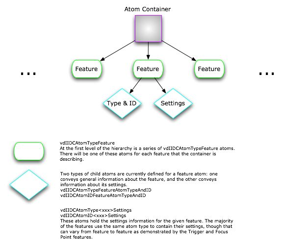

| ADC Home > Reference Library > Technical Q&As > Carbon > QuickTime > | |
|
Q: My application captures video from the iSight camera but in order to process the frames I need to make sure the gain adjustment is turned on and set to a certain value at specific times.A: The most straight forward approach is to use Alternatively, you can use the VDIIDC APIs directly and while slightly more complex, they may be more appropriate depending on the situation. Note: The VDIIDC APIs can only be used with the IIDC Video Digitizer. This component is identified by the subType Different IIDC cameras can support a number of different features. This feature information can be retrieved using one of the VDIIDCGetFeatures APIs and is returned in a hierarchy of QuickTime Atoms as shown in Figure 1. The Atom Container can then be parsed into the appropriate settings structures. Figure 1: IIDC Atom Hierarchy.  A full description of Atom types and VDIIDC APIs can be found in the New IIDC Digitizer Functions section of What's new in QuickTime 6.4. Listing 1: Configuring Gain using VDIIDC APIs.
ComponentResult ConfigureGain(SGChannel inChannel)
{
QTAtomContainer atomContainer;
QTAtom featureAtom;
VDIIDCFeatureSettings settings;
VideoDigitizerComponent vd;
ComponentDescription desc;
ComponentResult result = paramErr;
if (NULL == inChannel) goto bail;
// get the digitizer and make sure it's legit
vd = SGGetVideoDigitizerComponent(inChannel);
if (NULL == vd) goto bail;
GetComponentInfo((Component)vd, &desc, NULL, NULL, NULL);
if (vdSubtypeIIDC != desc.componentSubType) goto bail;
// *** now do the real work ***
// return the gain feature in an atom container
result = VDIIDCGetFeaturesForSpecifier(vd, vdIIDCFeatureGain, &atomContainer);
if (noErr == result) {
// find the feature atom
featureAtom = QTFindChildByIndex(atomContainer, kParentAtomIsContainer,
vdIIDCAtomTypeFeature, 1, NULL);
if (0 == featureAtom) { result = cannotFindAtomErr; goto bail; }
// find the gain settings from the feature atom and copy the data
// into our settings
result = QTCopyAtomDataToPtr(atomContainer,
QTFindChildByID(atomContainer, featureAtom,
vdIIDCAtomTypeFeatureSettings,
vdIIDCAtomIDFeatureSettings, NULL),
true, sizeof(settings), &settings, NULL);
if (noErr == result) {
/* When indicating capabilities, the flag being set indicates that the
feature can be put into the given state.
When indicating/setting state, the flag represents the current/desired
state. Note that certain combinations of flags are valid for capabilities
(i.e. vdIIDCFeatureFlagOn | vdIIDCFeatureFlagOff) but are mutually
exclusive for state.
*/
// is the setting supported?
if (settings.capabilities.flags & (vdIIDCFeatureFlagOn |
vdIIDCFeatureFlagManual |
vdIIDCFeatureFlagRawControl)) {
// set state flags
settings.state.flags = (vdIIDCFeatureFlagOn |
vdIIDCFeatureFlagManual |
vdIIDCFeatureFlagRawControl);
// set value - will either be 500 or the max value supported by
// the camera represented in a float between 0 and 1.0
settings.state.value = (1.0 / settings.capabilities.rawMaximum) *
((settings.capabilities.rawMaximum > 500) ? 500 :
settings.capabilities.rawMaximum);
// store the result back in the container
result = QTSetAtomData(atomContainer,
QTFindChildByID(atomContainer, featureAtom,
vdIIDCAtomTypeFeatureSettings,
vdIIDCAtomIDFeatureSettings, NULL),
sizeof(settings), &settings);
if (noErr == result) {
// set it on the device
result = VDIIDCSetFeatures(vd, atomContainer);
}
} else {
// can't do it!
result = featureUnsupported;
}
}
}
bail:
return result;
}
IMPORTANT: Some IIDC settings are tightly coupled and changing one often changes another; this is particularly true for the Gain, Shutter and Exposure settings. In other words, it's incredibly easy to configure the camera with settings that produce a completely unusable picture. Different camera models may also behave differently when specific settings are changed and certain cameras may not have certain features available. Document Revision History
Posted: 2005-04-06 |
|